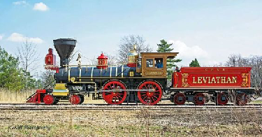

Group 5 Train Portfolio
Group Members: Jonathan Lewis, Joe Frumenti, Skyler Haataja, Ethan Wang, X. Christopher Zhang
This project is an interactive portfolio that is made out of train cars.
Each train car will represent a different project for the portfolio, and
the user will be able to navigate the various train cars to explore the portfolio
in an interesting way.
Seasonal Fractal Tree
By Jonathan Lewis and Joe Frumenti
A tree made using fractals coded in p5.js that cycles between being dormant and fully grown full of leaves with autumn colors